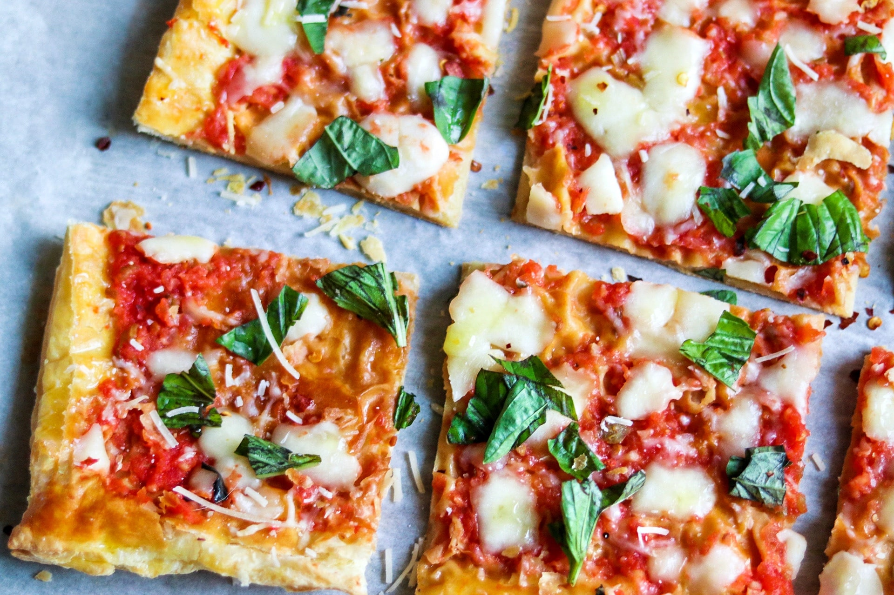

Puff Pastry Margherita Pizza

Description
This quick lunch or dinner pizza is made with prepared puff pastry dough as a shortcut. The results are a light, flaky crust for a unique pizza. Feel free to modify with your favorite pizza toppings.
Ingredients
- 2 sheets frozen puff pastry, thawed
- 1 large egg
- 1 tablespoon water
- 1 (14-1/2 ounce can) whole peeled tomatoes, drained
- 2 teaspoons extra-virgin olive oil, divided
- 1 clove garlic
- 1 pinch sea salt
- 6 ounces fresh mozzarella cheese, chopped
- 1/4 cup shredded Parmigiano-Reggiano cheese
- 10 leaf basil leaves, torn
Instructions
-
Preheat the oven to 425 degrees F (220 degrees C). Spread each sheet of puff pastry onto a piece of lightly floured parchment paper. Use a rolling pin to roll pastry into even rectangles. Lift pastry (with parchment paper) onto baking sheets
-
Pierce puff pastry all over with a fork. Beat egg with water in a small dish; brush pastry all over with egg wash.
-
Beat butter, 1/2 cup white sugar, and brown sugar in a large bowl with an electric mixer until light and fluffy. Beat in banana and vanilla extract on low speed until thoroughly combined; mix in flour mixture just until dough comes together. Using lightly floured hands, press dough firmly and evenly into the bottom of the prepared pan.
-
Bake in the preheated oven for 10 minutes.
-
Meanwhile, pulse tomatoes, 1/2 teaspoon of the olive oil, garlic, and a pinch of salt together in a food processor until pureed..
-
Bake until cheese is melted and crust edges are golden, about 5 minutes more. Remove from the oven and scatter basil leaves over the top. Slice and serve hot